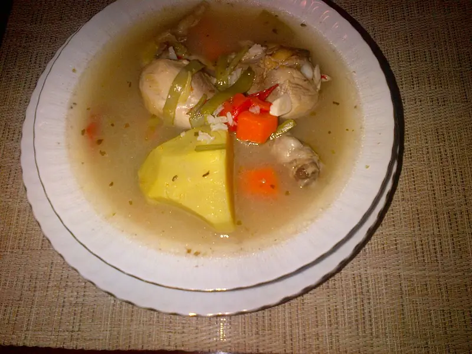

Фото: E4024, CC BY-SA 4.0
.jpg){kind=link}
Индейка, тушённая с овощами
Филе индейки с кабачком, перцем и помидорами, много белка и мало жира
45 мин4 порц.273 ккал на порциюБ 37 · Ж 8 · У 13Интернациональная кухня
Продукты на 4 порц.
- Филе индейки600 г
- Кабачок1 шт
- Перец болгарский1 шт
- Морковь1 шт
- Лук репчатый1 шт
- Помидоры2 шт
- Чеснок2 зуб.
- Вода0,5 стак.
- Растительное масло1,5 ст. л.
- Сушёные травы1 ч. л.
- Соль1,5 ч. л.
- Перец чёрный молотый2 щеп.
Как готовить
- Индейку нарежьте кубиками 2-3 см. Лук и перец нарежьте полосками, морковь - кружками, кабачок и помидоры - кубиками.
- Обжарьте индейку на масле на сильном огне 5 минут до светлой корочки.
- Добавьте лук и морковь, жарьте 5 минут на среднем огне.
- Положите кабачок, перец и помидоры, влейте воду, посолите, поперчите, добавьте травы.
- Тушите под крышкой на слабом огне 20 минут.
- Добавьте рубленый чеснок и тушите ещё 2 минуты. Индейка готова, если на разрезе белая и сочная, а овощи мягкие.
Совет. Филе индейки суше курицы, поэтому не жарьте его дольше 5 минут на первом этапе: дойдёт вместе с овощами.